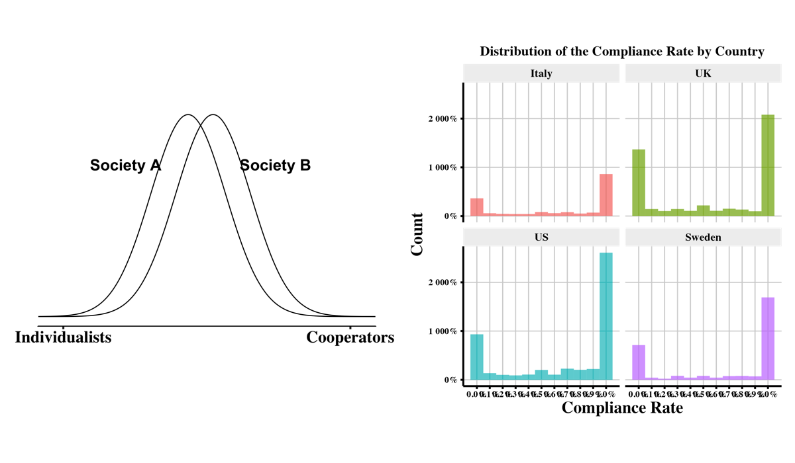
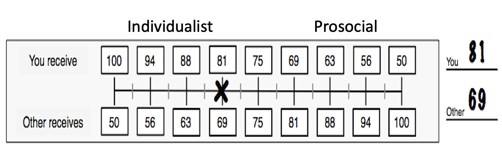

| Country | Tax Gap | Revenue Loss |
|---|---|---|
| Italy | 27% | 1.08257e+11 |
| UK | 6.4% | 4.80000e+10 |
| Sweden | 8% | 1.00000e+10 |
| US | 18-19% | 4.85000e+11 |
Willing to Pay: A Reasonable Choice Approach
John D’Attoma
W&I Strategy and Solutions, Team 3
The Tax Gap by Country
Why such big differences?
Why do people pay taxes or cooperate at all?
Cultural View
- “Egocentric Greek has himself to blame for the crisis” – Handelsblat, Netherlands
- “Honest in the North, Sneaky in the South” – Frankfurter Allgemeine, Germany
- “The euro zone is confronted with a crisis of not just labor cost and prices–but culture.” – Alan Greenspan
Classical Economics View
- Rational Choice tax compliance model (Sandmo et. al.), Homo-Economicus People only pay because they “have to.” Each individual conducts and implicit cost/benefit calculation on each choice.
- Humans are:
- Autonomous
- Rational
- Utility maximizers
A Reasonable Choice approach
- Humans are Social Animals
- Norms matter
- We have Moral Preferences
- Values matter
- Humans are Imperfectly Rational
- Cognitive need for (explanations)
- But Cognitively Biased –
Why experiments, and specifically lab experiments?
In the real world people in different countries face different fiscal systems. In the laboratory we can use the same system to see how different population groups behave differently.
IF we find variation with constant institutions (we do) then we can begin to manipulate the context and/or rules (instruments’) to hopefully uncover what explains these variations.
Laboratory Experiments
Merits and Objections
PRO:
- Laboratory can be a controlled environment.
- Experiments can be incentivized.
- Experimenter can concentrate on specific variables.
On the other hand:
- Labs are not “real.”
- Subject pools are largely students.
- External (uncontrolled) context may bias results.
Two Basic Questions
- What is common across countries?
- What are the differences between countries?
- Self-Interest
- Incentives and disincentives
- Norms
- What do I think “others” will do and what do they expect of me?
- Values
- Values –(What should I do?)
- A note on gender (if there is time)
Baseline Experiment
- Tax Compliance / Public Good Experiment:
- A real effort experiment – clerical task
- Three stages where we elicit tax compliance under different conditions.
Social Value Orientation (SVO) exercise
Questionnaire (basic questions drawn from International Public Opinion Surveys).
4 countries, 12 locations, ~2,500 subjects
Examples


Stage 1: Willing to pay?
- 30% tax rate for rounds 1-3
- Round I: Pure compliance – no redistribution
- Round II: Tax revenue collected into a “general fund” and redistributed equally among all participants
- Round III: Revenue collected into the general fund is doubled and equally redistributed among all participants
- Audit rate 5% ; Fine for under-reporting 2x tax
Willing to Pay – When you get something

Stage 2: Tax Rates
- Round IV: Participants pay 10% tax on reported earnings.
- Round V: Participants pay 30% tax on reported earnings.
- Round VI: Participants pay 50% tax on reported earnings.
- In each case, all revenues collected are put into a “general fund” which is doubled and redistributed equally to all participants.
- Audit rate 5% ; Fine for under-reporting 2x tax
How do tax rates affect compliance?

Key Take Away
- Institutions and incentives matter.
- Increasing the return on the public good, increases compliance, so does lowering taxes to an extent.
- However, the return on the public good is more important than tax rates.
- People in different countries respond differently to the incentives and institutions.
- Swedes and Italians respond the most to increased redistibution, while Brits and Americans respond the least.
- Italians are the most sensitive to increasing tax rates.
Norms and Social Behavior
- Humans are social creatures who most humans frame their own actions in the context of others’ behavior.
- Our decisions are often led by the desire to conform to the tastes and beliefs of others (Elster 1993; Cialdini and Goldstein 2004).
- Varied rules and norms are enforced differently in different societies.
- People comply with social norms even in situations where there is complete anonymity and where social punishment is not an option (Fehr and Fischbacher 2004).
- We choose to follow formal rules if we believe that others are doing the same.
How much with other contribute?

Norms by Country

A note about averages:
They can be misleading, especially when talking about cultural differences.

The Social Value Orientation Index
“Choose how much you will receive and how much”the other” will receive.”

Distribution of values

By Country

How do values affect compliance?

By Country

Institutions: Is this just a political economy story?
| Country | % of workers who are Self-employed | Estimated Evasion by the Self-employed |
|---|---|---|
| Italy | 25.1% | 60% |
| UK | 14.6% | NA |
| Sweden | 10.5% | 30% |
| USA | 6.8% | 25% |
See (Kleven et al. 2011)
Institutions: Value for your money

Quality of Government over time

Institutions over time
Self-interest
- Institutions ➡️ behavior.
Norms
- Behavior over time ➡️ cognitive bias’
Values
- Norm/bias’ over time ➡️ beliefs/values.
Bringing it back to distributions

A Note on gender

Questions
Thank you
References
Cialdini, Robert B, and Noah J Goldstein. 2004. “Social Influence: Compliance and Conformity.” Annu. Rev. Psychol. 55: 591–621.
Elster, Jon. 1993. Political Psychology. Cambridge University Press.
Fehr, Ernst, and Urs Fischbacher. 2004. “Third-Party Punishment and Social Norms.” Evolution and Human Behavior 25 (2): 63–87.
Kleven, Henrik Jacobsen, Martin B Knudsen, Claus Thustrup Kreiner, Søren Pedersen, and Emmanuel Saez. 2011. “Unwilling or Unable to Cheat? Evidence from a Tax Audit Experiment in Denmark.” Econometrica 79 (3): 651–92.